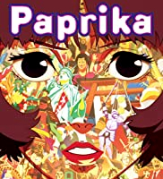
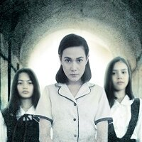

.jpg)
.jpg)
.jpg)
Paprika
Silent Hill
Silent Hill: Revelation
It
Eerie
|  | |
|
|
 |
|---|
Sypnosis:
Dr. Atsuko Chiba works as a scientist by day and, under the code name "Paprika," is a dream detective at night.
Atsuko and her colleagues are working on a device called the DC Mini, which is intended to help psychiatric patients,
but in the wrong hands it could destroy people's minds. When a prototype is stolen, Atsuko/Paprika springs into action to
recover it before damage is done.
Sypnosis:
Rose Da Silva and her husband Christopher are deeply disturbed by their adopted daughter Sharon's constant sleepwalking
and nightmares about Silent Hill, a town in West Virginia that was abandoned 30 years ago due to a massive coal seam fire.
Against Christopher's wishes, Rose takes Sharon on a trip to Silent Hill to find answers. Her erratic behaviour concerns police
officer, Cybil Bennett. Rose flees from Cybil, but when a girl steps out into the road, Rose crashes and blacks out.
Waking up some time later, Rose finds herself in the foggy dimension of Silent Hill and realizes that Sharon is missing.
Sypnosis:
In January 2011, Sharon Da Silva and her adoptive father Christopher, have spent the past few years moving from town
to town and assuming different identities, including the names Heather Mason and Harry Mason. Heather believes that they are on
the run from the police because Harry killed a man in self-defense and that her adoptive mother Rose Da Silva
died in a car crash. In fact, he has been protecting her from the Order, a cult of Silent Hill. Rose was able to free Heather
from the fog world using one half of a talisman called the Seal of Metatron, but she remained trapped in Silent Hill.

Sypnosis:
Seven young outcasts in Derry, Maine, are about to face their worst nightmare -- an ancient, shape-shifting evil that
emerges from the sewer every 27 years to prey on the town's children. Banding together over the course of one horrifying summer,
the friends must overcome their own personal fears to battle the murderous, bloodthirsty clown known as Pennywise.
Sypnosis:
The unexpected and gruesome death of a student threatens the existence of an old Catholic school for girls.
Pat Consolacion is the school guidance counsellor who involves herself with the students to help them cope. She also helps uncover
the mysteries of the student's death. Most students suspect it is the strict and borderline abusive Mother Alice. This is because
she also threatened Pat's tenure in the school because of her continuous meddling with the case. But Pat's unusual talents lead her
to know Eri, a former student who has been watching the whole school for years. Pat uncovers the secret of the school and the monster
that it nurtured for the past century.
REFERENCES: